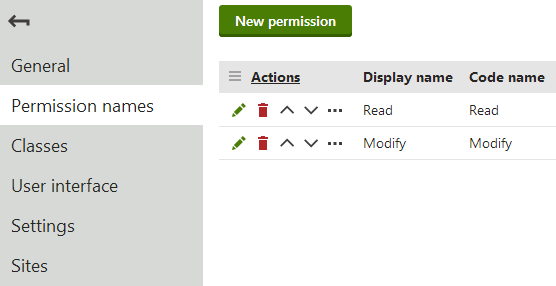
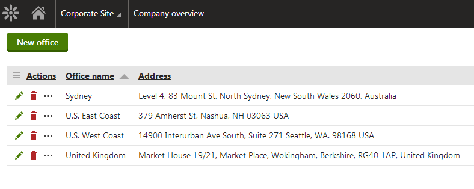

Creating custom modules
Modules in Kentico allow you to add custom functionality. You can extend all aspects of the system, including:
the administration interface
the data model (custom objects and database tables)
business logic and general functionality (for example using event handlers)
All of the default modules in Kentico are sealed – you cannot edit their properties, or create new classes, UI elements, permissions and settings. When you create your own modules, they are in "development mode" on the given Kentico instance, and you can modify them in any way.
The system provides a Custom module by default, which is always in development mode.
You can use the module to perform quick, non-transferable customizations.
The Custom module also serves as a container for custom objects from previous Kentico versions after performing an upgrade or import.
For creating modular custom functionality, we strongly recommend creating your own separate modules.
You can choose between two different approaches of developing and deploying your custom modules:
Modules deployed via installation packages
Deployment using NuGet packages
Module files are included in a separate project within the Kentico solution during development
All module code is compiled in a library (DLL) when installed on other instances
Cannot be used to transfer modules for development on other instances, because the modules become sealed during the deployment
See Creating installation packages for modules for more information.
For an example showing how to develop a module that supports the creation of installation packages, go to the Example - Creating a packageable module page.
Modules deployed via Export / Import
Provides an option to seal the modules during export or to leave them unsealed and available for further development after import
Requires manual selection of related database objects for each export package
The export cannot transfer DLL files along with the module
See the remaining parts of this page for an example of module development and additional details.
Creating custom modules
The following sections are an example that demonstrates how to create a basic custom module (does not include steps required to create Installation packages for the module). The module provides a "Company overview" that allows management of custom Office objects.
Important: It is necessary to follow all of the sections below in the presented order. Skipping steps may prevent subsequent sections from working correctly.
Start by defining the module in the Kentico administration interface:
Open the Modules application.
Click New module.
Type Company overview into the Module display name.
The system automatically uses CompanyOverview as the Module code name. Do NOT start the code names of custom modules with the cms. prefix, which is reserved for Kentico modules.
Click Save. The system creates the module and opens its editing interface.
Switch to the Sites tab and assign the module to your sites.
Defining module permissions
While editing the module in the Modules application, select the Permission names tab.
Click New permission.
Type Read into the Permission display name. The permission also automatically uses Read as the code name.
Enable Display in matrix.
Click Save.
Return to the list of permissions and click New permission again.
Type Modify into the Permission display name.
Enable Display in matrix.
Click Save.
Read and Modify are standard permissions that the system checks automatically for various purposes, including access of the module's user interface and editing of the module's objects.
We recommend defining the Read and Modify permissions for all custom modules that have their own user interface and data. Without the permissions, only users with the Global administrator privilege level can edit objects that belong to the module.

Creating the Read and Modify permissions for a custom module
Adding classes to modules
Module classes represent objects in Kentico. The classes serve as containers for configuration such as data fields, editing form definitions, and search settings. Classes also have associated code that provides an API for manipulating the given object.
To create a custom class for the sample module:
Edit the module in the Modules application.
Select the Classes tab.
Click New class.
Fill in the Class display name and Class: Office
Click Next.
In step 2, leave the default values and click Next.
Notice the Include Guid field and Include LastModified field checkboxes. If selected, the system automatically creates data fields for storing GUID identifiers and last modified timestamps. These two fields are necessary if you wish to use Staging or Export and Import functionality with objects of the given class.
See also: Enabling export and staging for the data of classes
Define the class's data fields. Click New field, set the properties, and click Save for each field:
Field name: OfficeDisplayName
Data type: Text
Required: Yes (checked)
Field caption: Display name
Form control: Text box
Field name: OfficeName
Data type: Text
Required: Yes (checked)
Unique: Yes (checked)
Field caption: Code name
Form control: Code name (select via the (more items...) option)
Field name: OfficeAddress
Data type: Text
Size: 400
Field caption: Office address
Form control: Text box
Click Next once the required fields are defined.
Click Finish to complete the creation of the class.
The system automatically creates a database table for storing the class's data.
Creating object type resource strings
The system uses resource strings to display the names of class object types. By default, such strings do not exist for custom classes. Without an appropriate string, a custom class object type uses a default name (equal to the resource string key), which makes it difficult to find and identify in the administration interface.
To create a resource string for your class's object type name:
Open the Localization application.
On the Resource strings tab, click New string.
Enter the following Key: ObjectType.CompanyOverview_Office (the general format is ObjectType.<class code name with an underscore>)
Type the following text for the English version of the key: Custom office
You can optionally enter translations for other languages that you use for the administration interface.
Click Save.
The system now uses the text of the resource string in the administration interface, for example in object type selectors.
Generating class code
The system provides a tool for automatically generating the basic code required for the API of the custom class:
Switch to the Code tab of the class.
The required system fields should automatically be mapped to the corresponding fields of the class (Display name, Code name, GUID, Last modified).
When creating your own classes, adjust the settings as necessary and click Generate code.
Click Save code.
The system generates Info and InfoProvider classes for the custom class in ~/App_Code/CMSModules/CompanyOverview. The default Info and InfoProvider classes are sufficient for basic functionality, but you can extend the code to create an API for your custom class. To learn how to set the metadata of your classes in the Info code, see Setting the type information for module classes.
Note: On web application installations, the system generates the files in the Old_App_Code folder. You need to manually include the files into the CMSApp project and build the solution (or move the files into your own custom module project).
Compiling module code into assemblies
We recommend storing your module's code files within a separate assembly (Class Library project) in the Kentico solution. This allows you to compile the files into a single DLL, and provides various advantages, such as:
Cleaner separation of custom module code from the default code of the Kentico web project.
Compilation performance – the module code is compiled into a DLL and does not require runtime compilation that slows down the web project.
Better accessibility of your custom classes from external applications or projects (for example projects running automated tests).
Easier re-usability across multiple projects.
To create a separate module assembly:
Open your Kentico solution in Visual Studio.
Create a new Class Library project in the Kentico solution.
Add references to the required Kentico libraries (DLLs) for the module project:
Right-click the project and select Add -> Reference.
Select the Browse tab of the Reference manager dialog, click Browse and navigate to the Lib folder of your Kentico web project.
Add references to the following libraries (and any others that you use in the module's code):
CMS.Base.dll
CMS.Core.dll
CMS.DataEngine.dll
CMS.Helpers.dll
Reference the custom module project from the Kentico web project (CMSApp or CMS).
Edit the module project's AssemblyInfo.cs file (in the Properties folder).
Add the AssemblyDiscoverable assembly attribute:
usingCMS;[assembly:AssemblyDiscoverable]Move all classes related to the module into the module project (including any Info and InfoProvider classes generated for the module's classes in the Kentico project's App_Code or Old_App_Code folder).
Build the custom module project.
The system can now work with the module's code in the given assembly.
Building the module interface
You can use the portal engine to develop custom pages in the administration interface for your modules. The portal engine allows you to perform most of the work directly in your browser, and build UI elements out of page templates and web parts.
Creating the module interface manually
If you do not wish to use the portal engine to build your module's interface, you can design UI elements as standard web forms in Visual Studio.
To learn more, see Manually creating the interface for custom modules.
The following sections describe how to create a basic editing interface for the Office objects used by the sample Company overview module.
Office listing element
In the Modules application, edit the Company overview module.
Open the User interface tab.
Select the CMS -> Administration -> Custom element in the tree.
Click New element (
 ).
).Set the following properties for the element:
Display name: Company overview
Module: Company overview
Element icon type: Class
Element icon CSS class: icon-app-localization
Type: Page template
Page template: Object listing (click Select to choose the template)
Click Save.
The UI element's position in the user interface tree under the CMS -> Administration -> (Category) section identifies the new element as an application.
By default, the element only checks the Read permission of the related module, and does not have any other access restrictions. For more information about the settings of UI elements, see Reference - Managing UI elements.
The purpose of the element is to display a list of all Office objects in the system. You need to set the properties of the Object listing page template for the UI element:
Switch to the element's Properties tab.
Select Custom office (companyoverview.office) as the Object type.
Click Save.
Every listing page requires an XML grid definition, specified by the Grid definition path property. With the property empty, the system attempts to load the grid definition from the default location for the given module and object type.
For the purposes of the example, open your project in Visual Studio and create the default.xml file in the following location (manually create the required folder structure):
~/App_Data/CMSModules/CompanyOverview/UI/Grids/CompanyOverview_Office/default.xml
<?xml version="1.0" encoding="utf-8" ?><grid> <actions> <action name="edit" caption="$General.Edit$" fonticonclass="icon-edit" fonticonstyle="allow" /> <action name="#delete" caption="$General.Delete$" fonticonclass="icon-bin" fonticonstyle="critical" confirmation="$General.ConfirmDelete$" /> </actions> <columns> <column source="OfficeDisplayName" caption="Office name" wrap="false" localize="true"> <filter type="text" size="200" /> </column> <column source="OfficeAddress" caption="Address" width="100%" /> </columns> <options> <key name="DisplayFilter" value="true" /> </options></grid>The Object listing template uses the Kentico UniGrid control. To learn how to create XML definitions for object lists, see Reference - UniGrid definition.
The example above defines two basic actions for the listed objects:
edit - handled automatically for portal engine elements (the listing element must have a child element whose code name starts with the Edit keyword)
#delete - a predefined UniGrid action for deleting Kentico objects. The functionality is ensured by the default API that you generated for the Office class.
New office element
Select Company overview in the UI element tree.
Click New element (
).Set the following properties for the element:
Display name: New office
Code name: NewOffice (Important: The code name of elements for creating new objects under listings must always start with the New keyword)
Module: Company overview
Display breadcrumbs: yes (allows users to easily return to the list of offices)
Page template: New / Edit object
Click Save.
The New element allows users to create new offices from the listing page. If you switch to the Properties tab, you can see that the element automatically inherits the Object type from the parent listing page (Custom office).
Office editing element
Select Company overview in the UI element tree.
Click New element (
).Set the following properties for the element:
Display name: Edit office
Code name: EditOffice (Important: The code name of elements for editing objects under listings must always start with the Edit keyword)
Module: Company overview
Display breadcrumbs: yes (allows users to easily return to the list of offices)
Page template: New / Edit object
Click Save.
The Edit element provides the editing form used when editing offices on the listing page.
If you switch to the Properties tab you can see that the element automatically inherits the Object type from the parent listing page (Custom office).
Tip: For complex objects, you can build an editing interface with multiple tabs:
Select the Vertical tabs page template for the Edit element.
Create any number of child elements with editing forms or other required content.
The tabs element automatically generates a tab menu for the child elements. You can find an example on the Creating custom binding classes page.
The user interface of the custom module is now ready. If you refresh the administration interface header and expand the application list, you can find the Company overview application in the Custom category. The application displays a listing page, where you can create, edit and delete offices. Users who do not have the Global administrator privilege level can only access the list if they have the Read permission for the Company overview module, and create, edit and delete offices if they have the Modify permission.

Listing interface of the custom module's application
In addition to defining custom objects and creating a user interface, you can also use custom modules to execute your own code. See Initializing modules to run custom code for more information.
Exporting custom modules
You can use the export feature to transfer custom modules to other instances of Kentico, or prepare module packages for the Kentico Marketplace. Deployment of modules using content staging is NOT supported.
The module export includes files from the following folders:
~/CMSModules/<module code name> - you can use this folder to store store custom web forms, user controls or other files used by the module.
~/App_Code/CMSModules/<module code name> - stores any required code files, such as the module's Info and InfoProvider classes.
~/App_Data/CMSModules/<module code name> - stores data files, such as XML definitions for listing pages.
Exporting modules with a separate assembly
If you are using a separate assembly (Class Library project) for the module's code, the resulting DLL is NOT automatically included in the export of the module. When using custom assemblies, you need to transfer the DLLs to the target project manually.
Creating export packages for modules
To export your custom modules:
Open the Sites application.
Click Export.
Enter a File name for the export package
Leave the Do not preselect any objects option selected and click Next.
Click Global objects -> Development -> Modules in the object tree and select your module.
(Optional) Select the Seal the selected modules checkbox if you want to seal the modules during export.
Sealing a module means that when the package is imported on another instance of Kentico, the module will no longer be in development mode (i.e. it will not be possible to edit the module's properties, or create new classes, UI elements, permissions and settings).
If you do NOT seal the modules, you will be able to further develop the modules after importing them to another instance.
Note: You cannot export a module again from instances where it is sealed. You always need to prepare module export packages on an instance where the module is in development mode.
Click Global objects -> Development -> Resource strings and select the ObjectType.<Class name> resource strings for your module's classes.
Click Next.
The system creates an export package containing the module, its user interface and all related files.
If the exported module is not assigned to any specific sites in the data of the export package, the subsequent import process automatically assigns the module to all available sites.
Exporting via installation packages
Alternatively, you can deploy custom modules using installation packages. To create installation packages for modules, you need to take additional steps while developing the module. For more information see:
Exporting data of module classes
You cannot transfer the data of a module's classes within a single export package along with the module itself. A single import operation cannot import both the module's class definitions and the data.
If you wish to provide default class data for your module, the recommended approach is to prepare a separate export package containing the required data. You can import the data after the module and its classes are successfully imported.
See also: Enabling export and staging for the data of classes